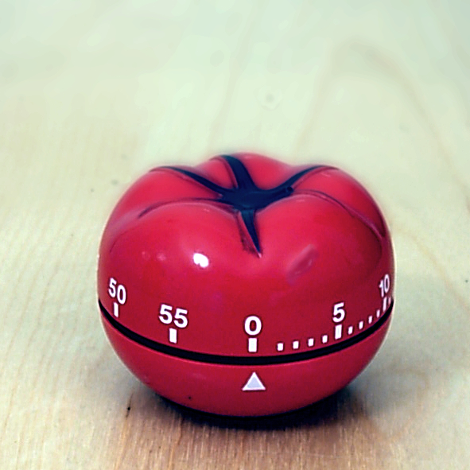

什么是番茄钟？
番茄工作法是一种简单易行的时间管理技术，旨在提高工作效率和集中注意力。该方法由弗朗西斯科·西里洛于1992年创立。番茄工作法的核心思想是将工作时间划分为短暂的番茄时段，每个番茄时段为25分钟，期间专注于单一任务，然后休息短暂的时间。这种间隔工作和休息的循环有助于提高工作效率。
如何使用番茄钟？
使用番茄钟方法的步骤如下：
- 设定任务：选择要完成的任务，并将其分解为可以在一个番茄钟内完成的小任务。
- 设置计时器：设定一个25分钟的计时器。
- 专注工作：在番茄钟的时间内全神贯注地完成任务，不受任何干扰。
- 休息：番茄钟结束后，休息5分钟，进行放松或活动。
- 重复循环：每完成四个番茄钟后，进行更长的休息（通常为15-30分钟）。
番茄钟的好处
番茄钟技术有多项好处，包括：
- 提高工作效率
- 增强专注力
- 减少工作中的压力和焦虑
- 更好地管理时间
更多资源
如果你想了解更多关于番茄钟的信息，请参考以下资源：